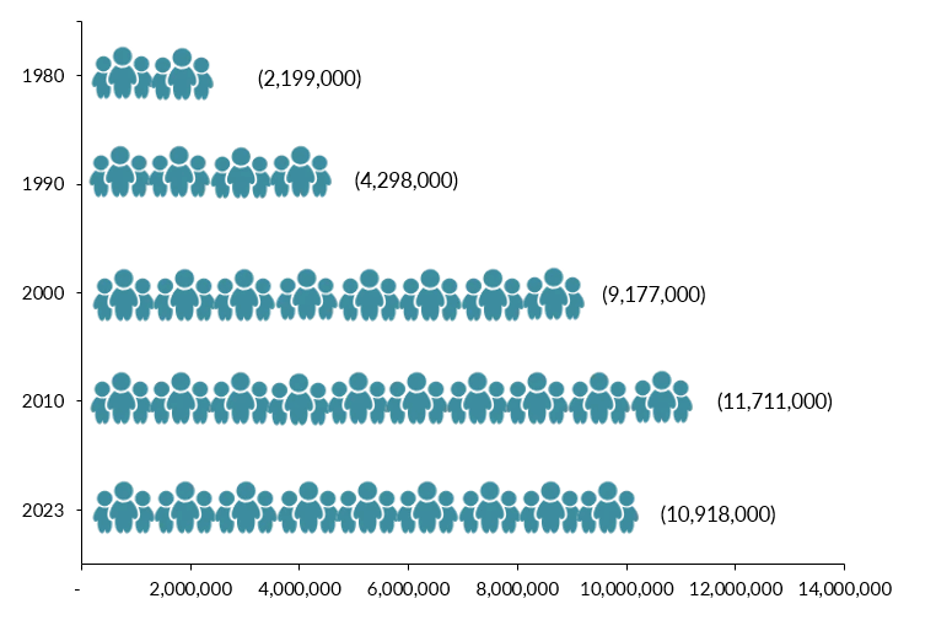

This site was created as a final project for ETHN 120: Immigration in the U.S.Made by Brenda Alarcon at Santa Clara University.
This project focuses on Mexican and Central American immigrants in the United States who start and sustain
businesses. Instead of looking only at who is admitted into the country, it centers what happens after migration:
how immigrants build businesses, create jobs, and support communities while navigating legal, financial, and
social barriers.
From Admissions to Entrepreneurship
My original project proposal focused broadly on immigrant admissions and who is allowed to enter the United
States. In feedback, Dr. Sampaio emphasized that this topic was too broad and encouraged a more specific focus
that built directly on the literature and the course themes. In response, I narrowed my project to examine
Mexican and Central American immigrant entrepreneurship.
This shift keeps immigration policy at the center but moves the lens to economic life: how immigrants navigate
the labor market, legal status, and racialization by opening businesses. It also aligns with course readings on
legal liminality, economic incorporation, and the racial construction of "illegality."
Why Immigrant Businesses Matter
Immigrants are not just workers or students; many are also business owners. Immigrant-owned
firms create jobs, provide culturally specific goods and services, and transform local economies. However,
the ability to open and grow a business is shaped by immigration policy, access to capital, and racialization.
Mexican and Central American immigrants often work in low-wage sectors and face precarious legal status.
Entrepreneurship becomes one of the few ways to gain some control over work conditions and income, even
when the businesses themselves remain vulnerable.
Guiding Questions
Who is able to start a business among Mexican and Central American immigrants?
How do legal status, education, and credit histories shape opportunities to become an entrepreneur?
What kinds of businesses do immigrants build, and how do these businesses serve their communities?
Which policies and programs help or hurt immigrant entrepreneurs?
Neighborhood tiendas and mercados are key sites of Mexican and Central American immigrant
entrepreneurship.
Street vending and food trucks provide flexible paths into business ownership, especially for undocumented
workers.
How the Site Is Organized
About explains the focus on immigrant businesses and guiding questions.
Barriers outlines four major structural obstacles to starting and maintaining a business.
Evidence & Quotes provides direct citations from scholarly and policy sources.
Key Statistics visualizes data on immigrant entrepreneurship.
Resources lists organizations that support immigrant entrepreneurs.
Success Stories offers composite narratives based on patterns found in the research.
Together, these pages show that Mexican and Central American immigrants do not just experience immigration
policy; they actively reshape local economies through entrepreneurship, even while facing legal and economic
constraints.
Barriers to Immigrant Entrepreneurship
Research on Mexican and Central American immigrant entrepreneurs identifies four core areas of constraint:
legal status, financial capital, language and culture, and
social and racial discrimination.
1. Legal Status & Immigration Policy
Undocumented status limits access to formal employment, credit, contracts, and business licenses. Many
immigrants live in a system that accepts their labor but restricts their rights and participation in key
institutions. Fear of deportation or audits can discourage entrepreneurs from approaching banks, licensing
offices, or government programs that might otherwise support their businesses.
Many business programs require Social Security numbers, tax IDs, or legal residency, effectively excluding
undocumented entrepreneurs even when they have the skills and motivation to start a business.
“Undocumented young adults must negotiate a system that recognizes their labor but denies them full
participation.”
Immigrant-owned firms rely heavily on personal and family savings and are less likely to receive bank loans than
native-born firms. Latino and Mexican entrepreneurs face systemic discrimination in lending, even when they have
similar credit profiles as white business owners. Nearly half of Mexican immigrants arrive with no credit
history, which makes it difficult to qualify for business credit.
“Immigrant-owned businesses rely more heavily on personal and family savings and are less likely to receive bank
loans.”
Many relief programs, grants, and business services operate only in English, which limits who can access them.
Business education programs rarely provide Spanish-language or culturally responsive training that matches
immigrant realities. Complex contracts, leases, and licensing forms can be difficult to navigate without
translation or guidance.
“Many immigrants could not access COVID-19 relief programs because materials were only available in English.”
Mexican and Central American immigrants are often racialized as “illegal,” which affects how landlords,
customers, and suppliers treat their businesses. Discrimination shows up in loan approval gaps, landlord
skepticism, and policing of public space where street vendors and other small businesses operate.
“The figure of the ‘illegal alien’ is an ideological construct that renders Mexican migrants a deportable and
subordinate workforce.”
Community organizations and Small Business Development Centers offer workshops that help immigrants
navigate licensing, loans, and business planning.
Street vendors and small businesses may face complaints or over-policing that limit where they can operate.
Evidence & Direct Quotes
This page collects key quotes from scholarship and policy reports that support the analysis on legal status,
capital access, language, and discrimination.
Legal Status & Immigration Policy
“Undocumented young adults must negotiate a system that recognizes their labor but denies them full
participation.”
Visual data showing the scale, innovation, and sector concentration of immigrant-owned businesses.
Immigrants are more likely than natives to start new businesses. Source: America's Voice, summarizing
research on immigrant entrepreneurship.
Immigrant-led new firms are more likely to produce new technology, hold patents, and bring innovations to
market. Source: Annual Business Survey, via research on immigrant innovation.
Immigrants own a high share of "Main Street" businesses such as gas stations, grocery stores, and
restaurants. Source: ForumTogether analysis of immigrant entrepreneurs.
Outlook and trends for Latino-owned businesses in the United States.
Latino population demographics and growth in the United States.
Loan approval rates and access to capital for immigrant and Latino entrepreneurs.
Average contract values and business opportunities for immigrant-owned firms.

Education levels and educational attainment among immigrant entrepreneurs.
Key Statistics
Immigrants Start Businesses at Much Higher Rates
Immigrants are 80% more likely than U.S.-born citizens to start a business.
Source: MIT, 2022
50% of Mexican immigrants lack a high school diploma and only 9% have a bachelor's degree, which affects access to capital and training.
Source: Migration Policy Institute
More than 3 million people are employed by nearly 350,000 Latino-owned businesses. From 2007 to 2019, the number of Latino-owned businesses grew by 34% while the number of White-owned businesses fell by 7%.
Source: Stanford Graduate School of Business
49% of Mexican immigrants have no credit history upon arrival in the United States, limiting access to capital.
Source: Migration Policy Institute
To make sure these images appear, save your graph files inside an images folder next to this HTML
file with the same file names, or update the src paths to match where you store the images.
Resources for Immigrant Entrepreneurs
Organizations and programs that provide funding, legal support, mentorship, and training for immigrant
entrepreneurs.
Funding & Business Support
Immigrants Rising – Entrepreneurship Support
Grants, training, legal FAQs, and guidance specifically for undocumented and immigrant entrepreneurs.
Visit Immigrants Rising
U.S. Small Business Administration (SBA) – Funding Programs
Microloans, regular loans, and technical assistance for small businesses, including immigrant-owned firms.
SBA funding programs
Latino Business Action Network (LBAN)
Stanford-affiliated initiative that offers education and research for Latino founders.
Visit LBAN
Small Business Development Centers (SBDCs)
Free one-on-one advising and workshops, often with Spanish-language support.
Find your local SBDC
SCORE – Free Business Mentors
National network of volunteer mentors who support new and growing businesses.
Connect with a mentor
Legal Status & Scholarships
Dreamer’s Roadmap
Helps immigrants, including undocumented students, locate scholarships and educational resources.
Dreamer’s Roadmap
National Immigrant Justice Center (NIJC)
Legal support for immigration relief, work permits, and documentation.
Visit NIJC
Mexican Consulates – IME Programs
Mexican consulates offer financial education, business workshops, and entrepreneurship training through IME
(Instituto de los Mexicanos en el Exterior).
Locate a consulate
Stories of Struggle & Resilience
These stories blend real documented patterns with composite narratives from Mexican and Central American
immigrant entrepreneurs in the Bay Area. They include successes, stalled dreams, financial setbacks, and
everyday struggles in food stands, retail shops, gas stations, and construction.
“María” – Taco Truck Owner, San Jose
María migrated from Michoacán and spent her first years selling tacos outside a laundromat without permits.
Police citations, fear of immigration enforcement, and English-only permit forms stalled her progress for
years. A Bay Area worker center eventually connected her to Spanish-language licensing workshops.
After three failed loan applications because she lacked credit history, she finally secured a microloan
through a community lender. Her truck now provides jobs to two relatives, but she still faces harassment
from inspectors and unpredictable street vending rules.
“Don Rafa” – Fruit Stand Vendor, Oakland
A street vendor near East Oakland’s Lake Merritt, Don Rafa sells mango, pepino, and watermelon—often facing
police sweeps targeting food vendors. He once lost an entire cart during a confiscation and had to rebuild
from scratch using borrowed money. His undocumented status prevents him from accessing small business
grants or unemployment during slow seasons. Despite this, he stays because his customers include
low-income families and unhoused residents who rely on his affordable produce.
“Yessenia & Marco” – Gas Station Franchise Owners, Redwood City
After years working minimum-wage jobs, the couple bought a small independent gas station. During the first
year, a predatory contract locked them into overpriced fuel deliveries, causing major financial strain.
English-language legal documents were difficult to understand, and hiring a lawyer was too expensive.
Community business counselors eventually helped them renegotiate terms. Their station now hires four
workers, but fluctuating fuel prices and rising commercial rent keep their margins slim.
“Ana & Jorge” – Family Grocery Store, San Mateo
Facing rising commercial rents and landlord skepticism, Ana and Jorge struggled to secure a lease for their
tienda. A Latino Chamber of Commerce guided them through inspections and helped them apply for a local
improvement grant. Their store now serves newly arrived immigrants who depend on culturally specific
foods—and functions as an informal information hub about housing, legal clinics, and jobs.
“Oscar” – Construction Worker Turned Contractor, Hayward
Oscar specialized in residential remodeling but struggled for years to transition from day labor to licensed
contractor. His undocumented status prevented him from obtaining a contractor’s license until California
changed eligibility rules. Even after becoming licensed, banks rejected his loan applications due to a thin
credit file. He built credit slowly through secured cards and community lenders and now runs a two-person
remodeling team focusing on ADU construction.
Both came from families of Mexican migrant laborers and rose to organize the United Farm Workers. Their
barriers included poverty, discrimination, and violent retaliation for labor organizing. Their legacy shows
how Mexican immigrant communities have long confronted exploitation while building economic and political
power.
Lupe Hernández – Latina Inventor (Widely Discussed Origin Story)
Although debated, the widely shared story credits Mexican-American nurse Lupe Hernández with inventing hand
sanitizer in 1966 when she realized alcohol could be suspended in gel. The story became famous during COVID-19
as an example of how immigrant-rooted innovation is often overlooked or uncredited.
Street food vendors—especially Mexican and Central American entrepreneurs—face unique challenges navigating
licensing, police presence, and unpredictable income.
Legal Information for Immigrant Entrepreneurs
This section summarizes key U.S. laws and policies that shape what immigrant entrepreneurs can and cannot do.
It is designed for Mexican, Central American, and other immigrant founders navigating business formation,
immigration status, and financial systems.
1. Business Formation Laws
In most states, you do not need U.S. citizenship or a green card to register a business. People
with ITINs (Individual Taxpayer Identification Numbers) can form LLCs, corporations, and sole proprietorships,
as long as they file taxes correctly.
Many undocumented, DACA, and visa-holding immigrants wrongly believe they are not allowed to own businesses.
Legally, the issue is not citizenship but tax compliance and state-specific licensing rules.
Immigrant entrepreneurs without Social Security numbers can use an ITIN to:
Pay business taxes
Open some business bank accounts
Apply for local business licenses
Legally form an LLC
An EIN (Employer Identification Number) is like a Social Security number for your business. You
can apply for an EIN with an ITIN, and you may need it to hire employees, open a business bank account, or file
certain tax forms.
3. Immigration Pathways Connected to Entrepreneurship
A few U.S. immigration options are specifically connected to entrepreneurship or investment. They are limited
and usually require capital, proof of innovation, or existing businesses. These programs typically apply to
founders, not regular workers.
International Entrepreneur Rule (IER) – Sometimes called "startup parole." Allows certain
founders to stay in the U.S. temporarily if their startup has high growth potential and significant
investment or public benefit.
USCIS – International Entrepreneur Parole
E-2 Treaty Investor Visa – For entrepreneurs from specific countries who invest a substantial
amount in a U.S. business. Mexico qualifies; most Central American countries do not.
USCIS – E-2 Treaty Investors
L-1 Visa – For business owners who already run a company abroad and want to open a U.S.
branch.
USCIS – L-1 Visa
O-1 Visa – For people with "extraordinary ability" (for example in technology, innovation, or
social impact). Some high-profile founders use this pathway.
USCIS – O-1 Visa
4. Banking, Credit, and Anti-Discrimination Rules
Under federal law, many banks can accept foreign passports, ITINs, consular IDs (such as the Mexican matrícula
consular), and other documents to open accounts. This matters because Mexican and Central American immigrants
are disproportionately unbanked.
Immigrants applying for business loans or credit cards are also protected by consumer finance laws against
discrimination and unfair lending practices, although discrimination still happens in practice.
Some professions (like real estate agents, nurses, or certain contractors) require a Social Security number or
legal status in many states. However, several states now allow undocumented or ITIN-only applicants to get local
business licenses.
In California, AB 2184 allows local governments to accept ITINs instead of SSNs for business
licenses. This is especially important for Mexican and Central American entrepreneurs who operate small
storefronts or food trucks.
Immigration laws passed in the 1990s still shape how safe immigrants feel interacting with government systems,
banks, and licensing offices. The most important is the 1996
IIRIRA (Illegal Immigration Reform and Immigrant Responsibility Act).
Created 3-year and 10-year bars on re-entering the U.S. after “unlawful presence.”
Increased penalties and enforcement, contributing to fear of detection.
Discouraged many immigrants from applying for loans, licenses, or other programs connected to government records.
Another example is the Public Charge rule, which in some versions penalized immigrants for using
certain public benefits. Even when they did not apply, confusion and fear kept many from accessing
non–means-tested programs, including some business support.
7. Policies and Programs That Support Entrepreneurs
Some state and federal initiatives try to expand access for immigrant entrepreneurs:
State "Right to an ITIN" policies – States like California, New York, and Illinois allow ITINs
for business licenses, state tax filings, and some financing programs.
CDFIs (Community Development Financial Institutions) – Mission-driven lenders that focus on
underserved borrowers, including immigrants who lack traditional credit histories.
This page is for educational purposes only and is not legal advice. Immigrant entrepreneurs should consult an
immigration or business attorney for individualized guidance.
Video Library: Immigrant Entrepreneurship
Curated English and Spanish video resources on immigrant entrepreneurship, barriers, legal rights, and
step-by-step business guidance. These can be used as class materials or community-facing tools.
Overview of how immigrant-owned businesses drive innovation, job creation, and local economies.
Watch on YouTube
How Immigrants Influence the U.S. Economy?
Explains the broader economic impact of immigrants, including entrepreneurship and small business formation.
Watch on YouTube
Barriers & Challenges
Immigrant Entrepreneurs Driving Small Business in the U.S.
Highlights both contributions and obstacles, including immigration status and access to capital.
Watch on YouTube
Why Do Immigrant Entrepreneurs Have to Work Harder to be Accepted?
Discusses bias, stereotypes, and social barriers facing immigrant founders.
Watch on YouTube
Navigating Entrepreneurship: Immigrant Entrepreneurs in Fresno
Local case study featuring immigrant business owners, their stories, and support networks.
Watch on YouTube
Legal Rights & Immigration Pathways
Rights of Immigrant Business Owners: Protecting Yourself and Your Employees
Covers worker rights, compliance, and how immigrant-owned businesses can protect themselves legally.
Watch on YouTube
Moving to the U.S. as an Immigrant Entrepreneur
Explains possible visa and immigration pathways for founders who want to start a business in the U.S.
Watch on YouTube
Residencia USA para Emprendedores (EB2 NIW)
Spanish-language explanation of investor and entrepreneur visa options.
Ver en YouTube
How to Start a Business (English & Spanish)
ImmigrantBizHub – Entrepreneurship Curriculum for Undocumented Immigrants
Practical training series tailored specifically to undocumented entrepreneurs.
Watch on YouTube
¡5 tips para iniciar NEGOCIOS EN USA para inmigrantes!
Spanish video offering step-by-step tips for starting a business in the U.S.
Ver en YouTube
Cómo Crear tu Empresa en EE.UU. Siendo Inmigrante Indocumentado
Spanish-language guide for undocumented immigrants on how to legally structure a business.
Ver en YouTube
Cómo iniciar un negocio en los Estados Unidos, DEBES …
Seminar-style overview in Spanish of requirements and steps to launch a business.
Ver en YouTube
Real Stories & Support
“I am an Immigrant Entrepreneur” Video Series
Playlist of immigrant entrepreneurs sharing their journeys, challenges, and community impact (multiple
languages).
Watch the playlist
These videos are external resources. Always evaluate who created them (community organization, government, law
firm, etc.) and how their perspective aligns with immigrant rights and racial justice.